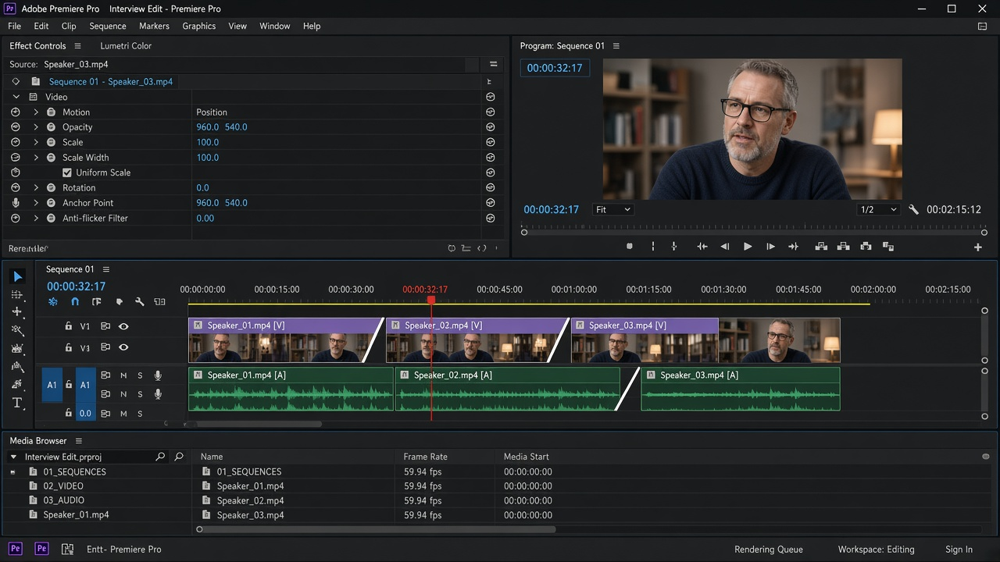
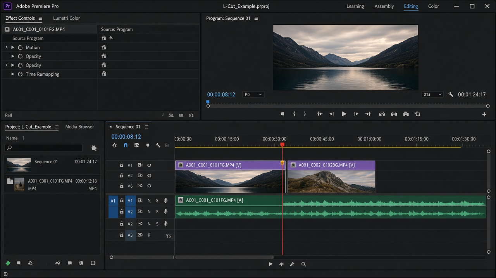

레슨 07
소리와 화면을 어긋나게
비디오와 오디오를 같은 프레임에서 자르면 컷이 잘 보입니다. 소리를 먼저 넘기거나, 화면을 먼저 넘기면 연결이 부드러워집니다.
목표. J-cut과 L-cut을 타임라인에서 만들고, 컷온액션으로 점프컷을 가립니다.
J-cut
다음 샷의 소리가 화면보다 먼저 들립니다. 타임라인에서 오디오가 J 자처럼 앞으로 빠져 나갑니다. 인터뷰에서 다음 질문이 들리며 화면이 바뀌는 느낌이 대표적입니다.
V
A

L-cut
화면은 다음 샷으로 갔는데 이전 소리가 조금 더 이어집니다. 오디오가 L 자처럼 뒤에 남습니다. 말이 끝난 뒤 상대의 표정을 보여 줄 때 자주 씁니다.
V
A

프리미어에서 만드는 법
- 비디오와 오디오가 링크되어 있으면, 경계에서 둘 다 같이 움직입니다. Alt를 누른 채 비디오만, 또는 오디오만 가장자리를 드래그하면 링크를 유지한 채 한쪽만 트림됩니다.
- 또는 클립을 선택하고 Ctrl+L로 링크를 잠시 해제합니다. 작업 후 다시 링크하는 것을 권합니다.
- 오디오 가장자리를 비디오 컷보다 왼쪽으로 빼면 J-cut, 오른쪽으로 남기면 L-cut입니다.
- 8~16프레임(대략 0.3~0.5초)만 어긋나도 충분할 때가 많습니다. 너무 길면 어색합니다.
컷온액션
같은 동작을 다른 각도에서 찍었다면, 손이 문을 여는 중간처럼 움직임이 있는 프레임에서 자릅니다. 눈은 동작을 따라가느라 컷을 덜 느낍니다. 각도만 바꾸고 포즈가 멈춘 상태에서 자르면 점프컷이 됩니다.
점프컷이 나쁜 것만은 아닙니다. 유튜브 토크는 숨과 군더더기를 잘라 점프컷을 리듬으로 쓰기도 합니다. 다만 의도 없이 머리가 튀면 실수로 보입니다. 자를 거면 과감하게, 이을 거면 동작 한가운데에서.